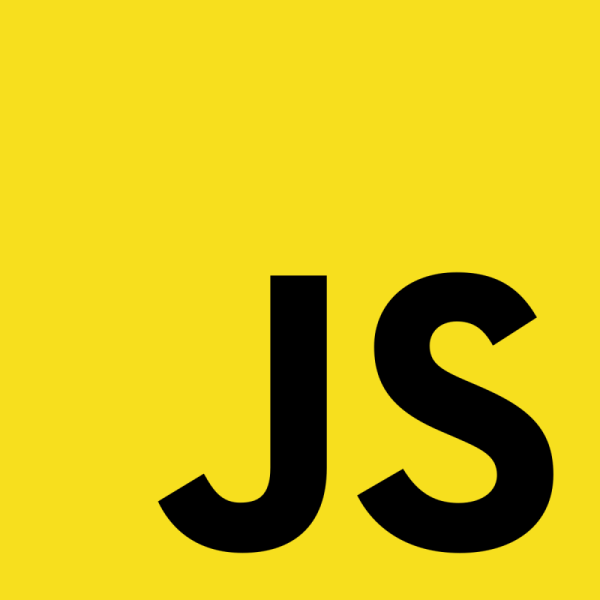

Index
Le JavaScript

1) qu'est ce que c'est
JavaScript est un langage de programmation de scripts principalement employé dans les pages web interactives et à ce titre est une partie essentielle des applications
web. Avec les langages HTML et CSS, JavaScript est au cœur des langages utilisés par les développeurs web3. Une grande majorité des sites web l'utilisent4, et la
majorité des navigateurs web disposent d'un moteur JavaScript5 pour l'interpréter.
JavaScript est aussi employé pour les serveurs Web6 avec l'utilisation (par exemple) de Node.js7 ou de Deno8.
JavaScript a été créé en 1995 par Brendan Eich et intégré au navigateur web Netscape Navigator 2.0. L'implémentation concurrente de JavaScript par Microsoft dans
Internet Explorer jusqu'à sa version 9 se nommait JScript, tandis que celle d'Adobe Systems se nommait ActionScript. JavaScript a été standardisé sous le nom
d'ECMAScript en juin 1997 par Ecma International dans le standard ECMA-262. La version en vigueur de ce standard depuis juin 2022 est la 13e édition.
C'est un langage orienté objet à prototype : les bases du langage et ses principales interfaces sont fournies par des objets. Cependant, à la différence d'un langage
orienté objets, les objets de base ne sont pas des instances de classes. En outre, les fonctions sont des objets de première classe. Le langage supporte le paradigme
objet, impératif et fonctionnel.
JavaScript est le langage possédant le plus large écosystème grâce à son gestionnaire de dépendances npm, avec environ 500 000 paquets en août 20179.
2) Quelques exemples

Parmis eux on retrouve des jeux connus comme
Une Calculatrice en Js